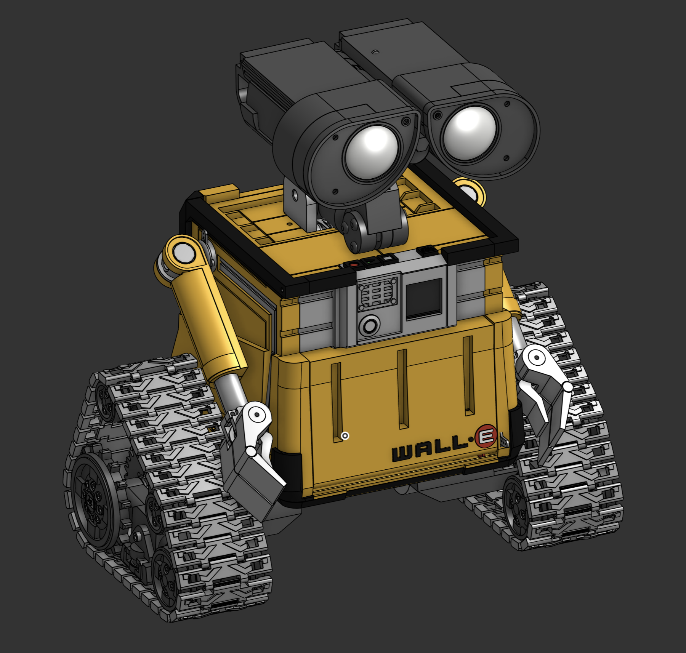

Drive and steer
Browser and gamepad control for tracked movement, plus timed sequence-driven overrides for dance moves, spins, and scene choreography.
Personal robot build, not a product
WALL-E-DORA is a Dora-based control system for a custom WALL-E-inspired robot built around a Raspberry Pi CM4, tracked drive, SC-series serial servos, a mobile-first HTTPS UI, on-board audio, a live USB camera, diagnostics, snapshots, and face-follow behavior.

What it does
Browser and gamepad control for tracked movement, plus timed sequence-driven overrides for dance moves, spins, and scene choreography.
SC-series servos drive head, arms, door, and other character motion while animated eye displays keep the robot readable and lively.
The web UI exposes scenes, gestures, reactions, and idle behavior so the robot can feel playful instead of remote controlled in the boring sense.
The camera stack powers a live background feed, snapshots, a gallery, and optional face-follow behavior for head tracking.
Servo diagnostics go beyond simple movement and expose live status, model data, configuration, cloning, reset, and calibration workflows.
INA226-based telemetry reports voltage, current, power, state of charge, runtime, and low-battery shutdown thresholds.
Software split
The system is intentionally split into focused nodes so robot control, media, diagnostics, and hardware interfaces do not all collapse into one giant script.
HTTPS app, WebSocket bridge, camera proxy, photo gallery, gamepad bridge, and face-follow coordination.
Coordinates timed movement, sound, eyes, and track actions into scenes, dances, and small character beats.
Discovery, movement, diagnostics, calibration, cloning, and config access for the SC-series servo bus.
Manual and sequence-driven differential drive through a serially connected RP2040 motor controller.
Sound playback and eye-image control give the robot most of its personality layer.
Shared settings persistence, power monitoring, and low-battery shutdown behavior keep the robot usable in the real world.
Reference hardware / BOM
Some parts are flexible, but the list below captures the concrete hardware choices that shape this build and its packaging.
SC-series serial servos, the RP2040 drive protocol, INA226 telemetry, the camera flow, and network-addressable eye displays are the parts most tightly baked into the current stack.
Exact motors, chassis geometry, gearboxes, servo count, gamepad choice, and even the exact USB camera can change as long as the surrounding interfaces stay compatible.
References
Quick video reference for posture, movement, and general personality.
Build logWiring, experiments, printed parts, test setups, and in-progress snapshots from the actual build.
Onshape CADThe best place to inspect body layout, arm geometry, eye assembly, and how the electronics physically fit together.
Credits / origins
The overall build is heavily rooted in chillibasket and the earlier public WALL-E build work documented there.
These are some of the public remix directions and mods that were definitely part of the path. Some were tried directly, some mainly informed ideas, and almost all of them were eventually reworked further.